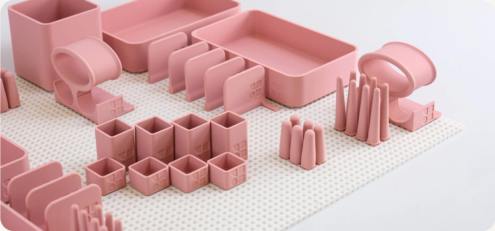
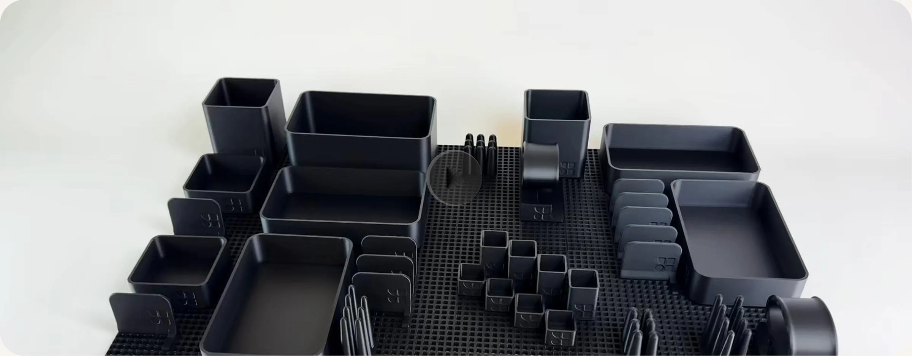
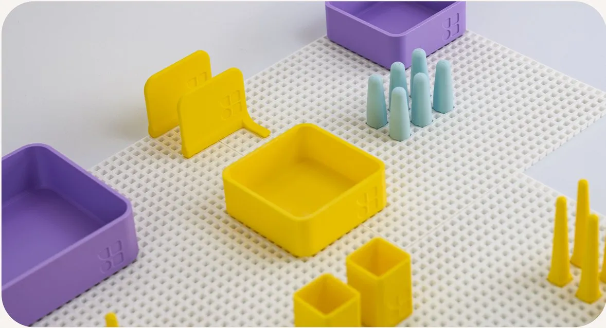

Порядок,
який
залишається на місці
Лотки, бокси та фіксатори, що тримаються на сітці й не роз'їжджаються, коли відкриваєш шухляду. Збери свою комбінацію під власний ящик.

Продумана система для зручності
Pin Pin не задає готовий порядок. Вона створює основу, на якій його можна будувати, змінювати й розширювати.
Обрати набір-
Єдина система
Модулі створені для спільної платформи та одного принципу кріплення.
-
Модульний масштаб
Система може починатися з однієї базової платформи та одного модуля.
-
Вільна конфігурація
Модулі не прив'язані до одного положення.
-
Основа 22 × 22 см
Базові платформи поєднуються між собою.
Порядок не
працює, якщо
він не зафіксований
Більшість органайзерів допомагають розділити простір, але не вирішують головного — вони залишаються рухомими.
Як зазвичай
Окремі лотки не мають точки фіксації. Вони можуть зміщуватися, залишати проміжки та змінювати положення всередині шухляди.
Як працює Pin Pin
Кожен модуль встановлюється на базову платформу та фіксується у вибраній позиції.
За потреби його можна зняти рукою, переставити або замінити — без клею, свердління та
інструментів.

Технологія, яка дає системі розвиватись
Модулі 7dem друкуються на власному виробництві в Одесі. 3D-друк дозволяє розвивати систему без великих тиражів і окремих прес-форм.
-
01
Виробництво від одного модуля
Система не потребує запуску великих партій. Мінімальна виробнича одиниця — один модуль.
-
02
Нові форми без великих тиражів
Новий елемент можна спроєктувати та запустити у виробництво без створення окремої прес-форми.
-
03
Єдина геометрія системи
Нові модулі розробляються як продовження Pin Pin та зберігають спільний принцип кріплення.
-
04
Власний контроль
Від цифрової моделі до готового виробу процес залишається всередині 7dem.
25 років досвіду виробництва
7dem з'явився у 2024 році. Але виробнича культура бренду спирається на понад 25 років досвіду Clixar — компанії, що виробляє захисні пломби для логістики, вантажів і контролю доступу та постачає продукцію більш ніж у 80 країн світу.
-
2024
рік народження нового бренду на основі багаторічної експертизи
-
$500M
майна під захистом завдяки продукції Clixar
-
У
80
+
країн постачається продукція Clixar
-
25
+
років досвіду у виробництві та розробці функціональних продуктів
Ідея, що почалася з власного досвіду
7dem з'явився з простого спостереження: звичайні органайзери допомагали розділити речі, але не вирішували проблему їхнього постійного зміщення.

Для мене було важливо створити не просто органайзер, а систему, де порядок закладений у саму конструкцію — і може змінюватися разом із простором.
Почни зі свого набору
Обери базову платформу та кілька модулів під свою шухляду
Доставка по Україні — 1–3 робочі дні.


Найчастіші запитання
Як зрозуміти, які модулі мені потрібні?
Це приклад тексту для заповнення макета. Він допомагає оцінити вигляд шрифту, довжину рядків, відступи та загальну композицію сторінки.
Чи підійде система під мою шухляду?
Це приклад тексту для заповнення макета. Він допомагає оцінити вигляд шрифту, довжину рядків, відступи та загальну композицію сторінки.
Чи можна докупити окремі модулі пізніше?
Це приклад тексту для заповнення макета. Він допомагає оцінити вигляд шрифту, довжину рядків, відступи та загальну композицію сторінки.
Скільки часу займає доставка?
Це приклад тексту для заповнення макета. Він допомагає оцінити вигляд шрифту, довжину рядків, відступи та загальну композицію сторінки.
Як доглядати за виробами?
Це приклад тексту для заповнення макета. Він допомагає оцінити вигляд шрифту, довжину рядків, відступи та загальну композицію сторінки.